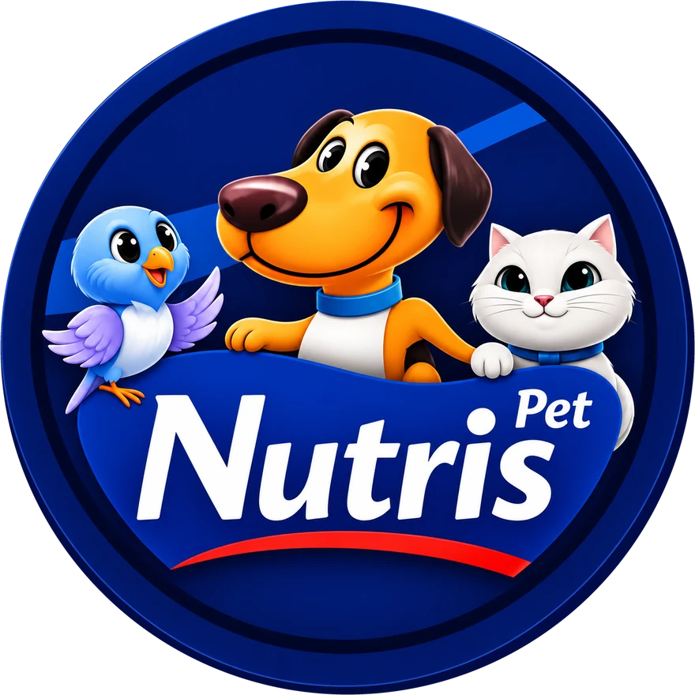

Casa de ração e farmácia pet em Tatuí
Pote cheio, pet feliz.
Rações das marcas que você confia, petiscos, acessórios e farmácia pet. Com ajuda na escolha e entrega em Tatuí.
Aqui tem compromisso de verdade.Com o bem-estar do seu animal.

Seu melhor amigo. Nosso maior compromisso.
A Nutris leva até vocêEntregas em Tatuí
Marcas que você confiaDo premium ao super premium
Ajuda na escolhaA ração certa para cada fase
Farmácia petAntiparasitários e medicamentos
Do filhote ao sênior
O que vai no pote hoje?
Da ração do dia a dia ao antipulgas do mês.
Direto da nossa prateleira
Do pacotinho de 1 kg
ao saco de 15 kg.
Escolha com calma.
Na dúvida, a gente indica a ração certa.
Nada por aqui com esse nome.
Tente outra palavra ou fale com a gente: se a marca não estiver aqui, a Nutris procura para você.
Itens ilustrativos para experimentar cada detalhe da loja.
Farmácia pet aberta
Muito além da ração
Tem farmácia.
Tem orientação.
Tem Nutris.
Além da ração, a Nutris tem farmácia pet com antiparasitários, vermífugos e medicamentos. E gente que ajuda a escolher a apresentação certa para o peso e a idade do seu pet.
Pulgas, carrapatos e vermes: a equipe ajuda a encontrar a apresentação certa pelo peso e pela idade do seu pet, sempre seguindo a orientação do médico-veterinário.
Mande a foto da receita pela conversa. A equipe confere, separa os itens e avisa quando estiver tudo pronto para retirar ou receber em casa junto com a ração.
Ração, antipulgas do mês, vermífugo: combine com a equipe e receba um aviso antes de acabar.
Nosso jeito de cuidar
Bem-estar não é detalhe.
É compromisso.
É por isso que a Nutris fala de nutrição e saúde com responsabilidade. Ração certa, orientação honesta e atenção a cada pet que passa pela loja.
- Compromisso
- Orientação
- Bem-estar
Do outro lado da tela também tem cuidado
Acabou a ração?
A Nutris leva até você.
Peça pela conversa, tire uma dúvida sobre a ração ideal ou mande a receita da farmácia. Entregamos em Tatuí.
Rua XI de Agosto, 2661, Tatuí (SP)